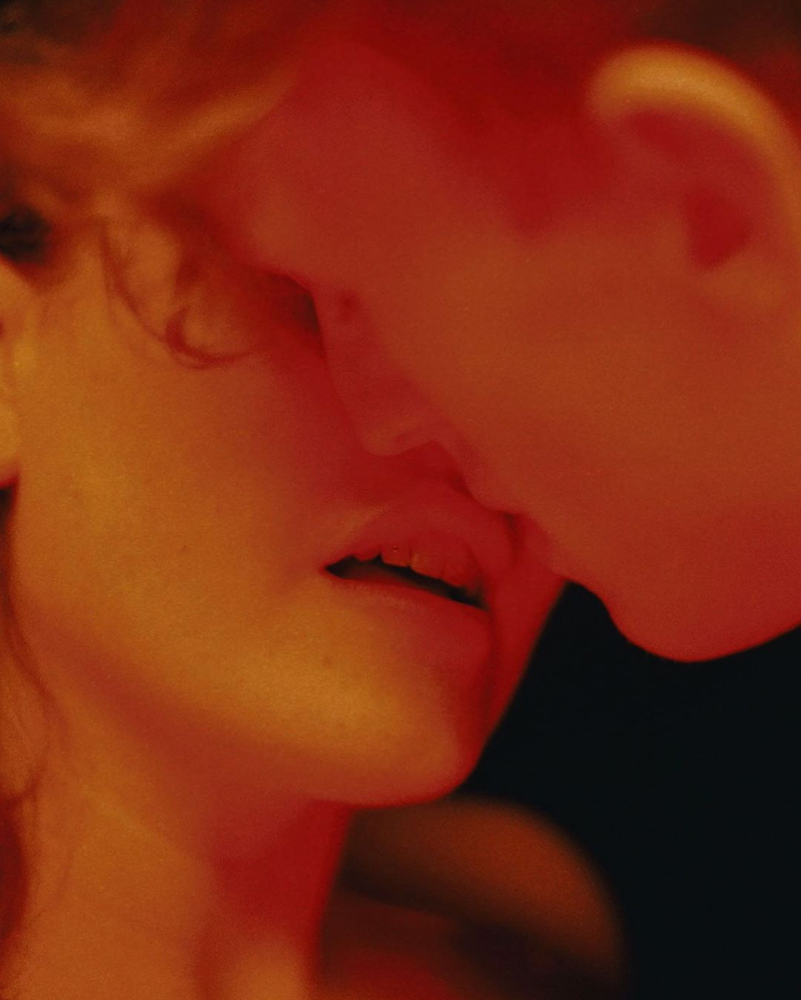

F-OICE-S
Centring Marginalised Voices
KISS KISS Photo Series
By
Dutch filmmaker and photographer
Mees Peijenburg

This series focuses on why a kiss is not just a kiss, but a sensual touch that is often triggered by a positive interaction between two or more humans. KISS KISS displays different moments that take place after two lips touch; pleasure, giddiness, nervous excitement. The rawness & transparency of Mees’ series almost helps you form bonds with the kisses without making you feel uncomfortable.
Discover the series